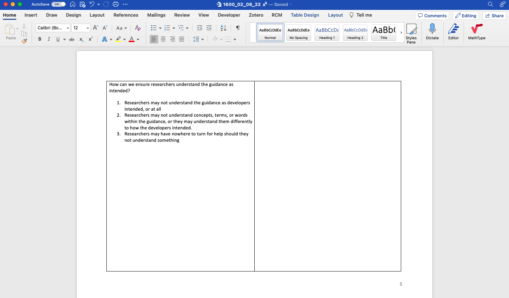
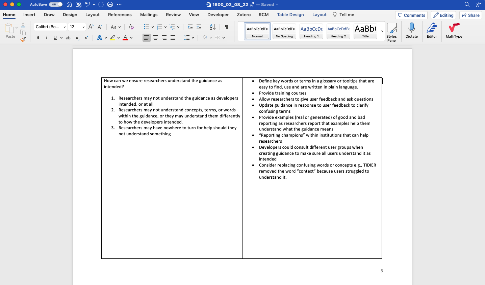

8 Generating ideas to address influences: focus groups with reporting guideline developers, advocates, and publishers
8.1 Introduction
In chapter 7 I described how I led reporting guideline experts from the EQUATOR UK Centre through the stages recommended in Michie et al.’s book “The Behaviour Change Wheel - A Guide to Designing Interventions” [1]. This guide helped us define our target behaviour, identify 32 influences that had to change for our target behaviour to occur, and to prioritise lists of intervention functions, policy categories, possible behaviour change techniques, and delivery options. However, these lists were abstract and still had to be actualised. For instance, although we had prioritised Restructuring the physical environment as a possible behaviour change technique, how could the environment be restructured? Similarly, we prioritised Enablement, Persuasion, or Education, but how and where could these functions be applied? We had vague notions that redesigning reporting guidelines, the EQUATOR website, developing new guidance and communication campaigns might be useful, but no tangible plans.
Thus my next objective was to gather concrete ideas on how these abstract concepts could be realised to address reporting guideline limitations. In chapter 7 I explained how I began this process with EQUATOR staff as part of step 7 of the workshops, when I asked them to consider how we could use our preferred intervention functions to address influences. This was an opportunity to invite input from broader stakeholders. Although EQUATOR is a key part of the reporting guideline landscape, they are only a part of it. Ultimately, all stakeholders within the academic system influence the impact of reporting guidelines. Guideline developers and publishers arguably do so most directly, and so it was important to draw on their experience and opinions. It hadn’t been feasible to include these stakeholders through all stages of the Behaviour Change Wheel approach as the time commitment was too great, and it would have required stakeholders to become familiar with the framework and its terminologies which was too big an ask. In contrast, brainstorming ideas was a convenient and important stage to include them in. I expected that seeking input from a more diverse group would lead to more ideas and that those ideas would be more likely to gain traction.
In this chapter I explain how I went through this brainstorming process by 1) running workshops with EQUATOR staff members and 2) running focus groups with other stakeholders before describing the combined results.
8.2 Methods
The purpose of this study was to elicit ideas from experts familiar with reporting guidelines, on how to address influences that may affect adherence. My methods had two parts: 1) brainstorming ideas with EQUATOR during workshops and 2) extending this list through focus-groups with guideline developers, publishers, and guideline advocates. I then describe the combined results.
Workshopping Ideas with EQUATOR
I described the workshops I ran with EQUATOR in chapter 7, including the techniques I used to encourage rich discussion and to navigate my position as a participating researcher, contributing ideas myself whilst facilitating others to share their voices. In step 7 of those workshops, I asked participants to consider each intervention function in turn and suggest ideas employing it. After the workshop, I then labelled each idea with the influence(s) it would be addressing to create an “ideas table” with two columns.
The left hand column listed influences. These came from the consolidated list of what needs to change for our target behaviour to occur that came out of step four of the Behaviour Change Wheel workshops in the previous chapter. The influences were initially worded as statements (e.g. “Researchers may not know when reporting guidelines should be used”). To make discussions fluid, I rephrased each to a question (e.g. “How can we ensure researchers know when reporting guidelines should be used?”), and included context and elaboration.
The right hand column listed the ideas of how each influence could be addressed, coming from step 7 of the workshops. The table had 32 rows, one for each influence, and I gave each row a full page so there was a lot of white space to add ideas to, and so that rows could be presented individually on a computer screen (see Figure 8.1). I invited workshop participants to review and edit this table, thereby co-producing a list of influences and linked ideas.
Focus groups with external stakeholders
Focus groups are researcher-facilitated group discussions that use conversation as a form of data collection [2]. A key element of focus groups is interactions between participants as they agree, disagree, challenge, and ‘feed off’ of each other [2]. I chose focus groups because I expected this interaction to lead to more ideas being generated than if I interviewed participants in isolation. Focus groups are also a practical way to collect data from larger groups of people. This is in contrast to in-depth interviews which are more useful in eliciting rich detail about individuals’ perspectives [2].
Before describing my focus group methods in detail, I will briefly outline two key differences to the workshops. The workshops described above were part of the sessions described in the previous chapter, where I explained how I actively contributed because I felt my experience would be useful. However, by the time the focus groups with external stakeholders began I felt I had contributed everything I had to give, and my priority for this study was for stakeholders to shape and build upon what EQUATOR and I had done. Therefore, whereas I actively contributed during the EQUATOR workshops, I tried to remain a passive facilitator during the focus groups. This was the first key difference. The second was that whereas in the workshops, EQUATOR staff and I spent many hours, across multiple sessions, working through influences one at a time, this was not feasible in the focus groups because it would have required multiple sessions and participants had limited time. Instead, focus group participants selected influences to discuss.
Sampling
To seek variation and ideas from a broad range of stakeholders, I invited a purposive sample including the developers of popular reporting guidelines, publishing professionals, and academics that have studied reporting guidelines. My invitation email is in Appendix M. I asked participants to extend the invite to others they felt would be appropriate. Because the Behaviour Change Wheel requires input from experts with insight into the intervention, I decided against recruiting naïve authors for this study (although I did elicit their opinions in a subsequent study — see chapter 10).
Following best-practice, I used information power [3] to guide my desired sample size. I decided to use information power above data saturation because, although the latter is commonly requested by editors and reviewers, many have argued against its (often poorly defined) use beyond its original application in grounded theory [5]. Instead, I followed Braun and Clarke’s advice to use pragmatic ‘rules of thumb’ to anticipate a lower sample size that could potentially generate adequate data, and then make an in-situ decision about when to stop collecting data [5]. Information power is one such set of rules. Malterud et al. posit that the more relevant information a sample holds, the fewer participants are needed. They argue that sample size sufficiency depends on five factors: 1) whether the study’s aim is narrow or broad, 2) whether samples are considered dense (they have a lot of relevant experience or knowledge of the phenomena) or sparse, 3) whether the study is well supported by theory, 4) the quality of dialogue, and 5) whether data will be compared between participants/groups. My aim was narrow and well defined. My sample was dense in that participants knew a lot about how reporting guidelines are disseminated but also showed variance in terms of which guidelines they work on and which parts of the academic system they represented. I used the Behaviour Change Wheel as an applied theory. I used open questioning to encourage strong dialogue (I elaborate on this later), and I was not planning a cross-case analysis. All of these choices put my study towards the high-power end of Malterud’s spectrum. Therefore, I deemed my information power sufficiently strong to justify initially recruiting 15-20 participants across 4-5 groups.
By monitoring the number of edits to the co-produced file I could be confident that my information power was good (i.e. that my sample was generating new ideas). I used the dialogue criteria from information power to decide when to stop recruiting. Once groups began to add fewer and fewer comments, I judged that the benefit of continued recruitment was insufficient given time constraints.
Materials
I used the ideas table to prompt discussion in the focus groups. However, because ideas generated by previous participants could bias or limit the creativity of current participants [7] I initially hid them by turning the text in the ideas column white before sharing the document. I would reveal the text only after participants had exhausted their own imagination (see Figure 8.1 for an example). All participants could edit this file to record their own ideas or elaborate on other people’s ideas. At the end of each focus group, I then turned the ideas column white again, ready for the next group to continue the process. In this way, each group built upon the output of the previous groups without being bias by it.


Focus group sessions
I conducted focus groups between May-July 2022 online using Zoom. Before each focus group, I asked participants to spend some time thinking about influences and what needed to change. I did this because I wanted participants to get into the frame of mind and come to the focus group “armed” with influences they were ready to discuss. I was also interested to see whether participants would contribute influences that I did not identify in chapters 3 - 5.
Each focus group lasted 2 hours. Following standard practice, I began by introducing myself and the project in a way that I hoped would help participants relax and to think open-mindedly, not defensively [8]. I explained where the list of influences had come from, and that the influences were in reference to reporting guidelines in general, and not necessarily a comment on any guideline in particular. I encouraged participants to think beyond the guideline documents themselves, and to consider all stakeholders and resources involved. I explained the goal was to brainstorm as many ideas as possible, and not worry about whether ideas were good or bad [7].
It was not possible for a single focus group to cover all rows within a reasonable amount of time, so I allowed participants to select which influences they wanted to discuss. I did this by giving them a few minutes to read through the influences in the left hand column, raise any additional influences they felt were missing, and mark those that they wanted to talk about. I occasionally selected items to discuss myself, either because they had been neglected by previous groups or because I expected participants to have insight into them.
For each influence discussed, I would explain it and allow participants to ask questions. Inspired by the Think/Pair/Share teaching method to encourage engagement within classrooms [9], I then asked participants to spend a minute reflecting on the required change and brainstorming solutions on their own before discussing them as a group. I encouraged this solo reflection because I wanted all participants to engage with the problem.
To facilitate discussion, I asked open ended questions, often drawing on intervention functions from the BCW by asking questions like “how could this be easier to do?” or “how could we change how people feel about this?”. I did this when participants ran out of ideas, or when they got fixated on a particular type of intervention, in which case I would reassure participants that their fixated solution was already documented and that it would be useful to think of alternatives.
Once participants had exhausted their own ideas, I revealed the ideas identified by previous groups by changing the colour of text from white to black. Participants could then edit and extend the text until it reflected all of their thoughts too. Ideas were never removed from the document, but participants could add concerns or disagreements if they wanted to. Editing the file in this way allowed participants to document their thoughts in their own words.
After each focus group I made notes on how the session went and reflected on what I could have done differently. I made a copy of the ideas document and then turned the text in the ideas column white again, ready for the next group. Taking copies after each group created a paper trail of how the document had evolved after each session. I counted the number of additions so that I could monitor how many new ideas had been added and, therefore, whether I could stop data collection.
Data processing and analysis
I used qualitative description for my analysis [10,11], which involved aggregating and summarising ideas. I imported the final ideas document into NVivo [12] and applied descriptive codes to ideas. If a sentence contained multiple ideas, I coded each idea separately. I also coded the influences and stakeholders that were related to each idea. I did not interpret data as doing so would erase the views captured during co-production.
In the next chapter I describe how I used the Behaviour Change Wheel to label ideas according to their intervention function. However, I wanted the results of this chapter to be accessible and useful to the reporting guideline community (I have since shared this chapter with a few guideline development groups), and so I decided to group ideas inductively in ways that felt cohesive and made the results easy for my intended audience to understand and act upon. For example, I aggregated “ask authors to cite reporting guidelines” and “display citation metrics on reporting guideline resources” into a group about “Citations”, even though they target different influences (discoverability and perceived trustworthiness) and employ different intervention functions (education and persuasion). I labelled each group with the influence(s) it addressed, and the stakeholders it involved.
I discussed and refined my coding, aggregating and summarising with one of my supervisors, Jennifer de Beyer. I sent the aggregated, summarised ideas to focus group participants and EQUATOR staff members, inviting them to check it reflected their ideas faithfully.
Reflexivity & Trust
In chapter 7 I described my active role within my workshops with EQUATOR and I argued that my subjectivity was an asset within the workshops. In contrast, I tried to remain objective when running focus groups with external stakeholders, in order to capture the perspectives of participants without influencing them. My research paradigm for the focus groups was post-positivist, in that I considered that ideas were “out there”, but that differences in context, experience, and opinion would affect what I (and participants) observed, understood, and concluded.
I wanted to ensure my results could be trusted as an account of participants’ views. Lincoln and Guba [13] argue that for a study to be trustworthy, the researcher must show that the findings are credible (‘true’), transferable (applicable to other contexts), dependable (consistent and repeatable), and confirmable (shaped by participants, not by the researcher’s bias or motivation). Lincoln and Guba propose a number of techniques to achieve these criteria, and I describe the techniques I used in Table 8.1.
| TECHNIQUE | IMPLEMENTATION |
|---|---|
| Techniques for establishing credibility | |
| Member-checking | Lincoln and Guba argue that member checking is the most important way to the establish validity of an account [13]. Accordingly, I invited participants to comment on my synthesised results, asking for feedback on the structure of categories, my interpretation of their data, and my findings and conclusions. I also invited participants to comment on the product of my data analysis in the form of itemized information and condensed notes. |
| Peer debriefing | Throughout the design, data collection, analysis and reporting, Charlotte Albury acted as a disinterested peer. By questioning my reasoning and exploring my assumptions, she helped me become aware of biases, perspectives I was taking for granted, and assumptions I was making. Jennifer de Beyer acted as a disinterested peer during data analysis. |
| Techniques for establishing transferability | |
| Thick description | I aspired to report my results with context by indicating when ideas were common or rare, and who they originated from when I felt this was particularly relevant. I reported disagreements, provided quotes, and relationships between ideas. |
| Techniques for establishing confirmability | |
| Audit trail | I referred to audio recordings of the focus groups whenever I needed to clarify parts of the document. I kept versions of raw data collected from all stages. I made a note of my own ideas before commencing data collection, documented all stages of the workshops I held internally with the EQUATOR Network, and kept copies of the co-produced file after every focus group. I kept a copy of my coding in NVivo, and versions of the unitized information and summaries that I sent to participants before and after member checking. This audit trail meant that I could be certain of which stages of research ideas originated from. |
| Reflexivity | I kept personal notes throughout planning, data collection, analysis and reporting, in an attempt to remain aware of my own perspectives and positions, and how they may influence my research. |
Ethics & Data Management
The study was approved by the Medical Sciences Interdivisional Research Ethics Committee (R80414/RE001). Participants gave informed consent by completing an online form [14] having read the participant information sheet (see Appendix N). Participant’s edits to the co-produced file were anonymous. I recorded the audio of focus groups so that I could refer to them during analysis. All data and recordings were kept on secure university storage.
Reporting
I used SRQR [15] when outlining this chapter, and again to check my reporting during revision (see appendix L).
8.3 Results
Units of study
I held 7 focus groups involving 16 participants in total. Participants included guideline developers (n=11), publishing professionals (n=3), and academics that study reporting guidelines (n=2). Although I had intended to include 4 or 5 participants per focus group, in practice it was difficult to coordinate participants across time zones, and so sessions only had 2 or 3 participants.
Of the 23 invitations that I sent in total, 7 received no response. Of the 15 guideline groups I invited, 5 took part, 4 wanted to but were unable to coordinate a time, 5 did not respond, and 1 group declined; they felt their guideline did not need updating because it was highly cited. Because I invited prospective participants to share the invitation I have no way of knowing my exact recruitment rate.
Before the focus groups, my workshops with EQUATOR had generated a list of 24 ideas, which formed the initial “ideas table” presented to the first focus group. Focus group participants then extended this list to include 128 ideas to address 32 influences. Focus group participants did not identify any new influences. The seventh focus group added just two new ideas and extra context to an another existing two, and so I decided to stop data collection. I grouped ideas into 28 broader ideas, which I categorised according to whether they could be considered before developing a reporting guideline, when developing a reporting guideline, when writing guidance down and creating resources, when disseminating resources, or on an ongoing basis. Participants identified 10 stakeholders that could enact these ideas: funders, ethics committees, institutions, publishers, equator network, guideline developers, registries, preprint servers, conference organisers, and societies.
Synthesis and summary
Here I describe the aggregated ideas originating from the focus groups in this chapter and step 7 of the workshops from the previous chapter, as described at the beginning of my methods section. Although I described the people taking part in focus groups as participants, I did not use this term in the previous chapter because I took part in the workshops with my colleagues and so the line between researcher and participant was blurred. Because focus group participants were building upon our workshop outputs, the results presented here reflect the ideas of focus group participants and workshop members. Consequently, I use the term stakeholder in this section to reflect that the results presented originate from both focus group participants and workshop members, which included myself.
The broad ideas are summarised in Table 8.2 and described below. I report them fully in Appendix O, where they are labelled with the sub-ideas they contain, the influence(s) they address (from Appendix I) and stakeholders involved.
| IDEAS | INFLUENCES |
|---|---|
| Before developing a reporting guideline | |
| Create reporting guidance for early stages of research | Researchers may not have tools for the job at hand Researchers may not encounter reporting guidelines early enough to act on them |
| Avoid confusing authors with too many reporting guidelines | Researchers may not know what reporting guidelines exist Researchers may struggle to reconcile multiple sets of guidance Researchers may not know what reporting guideline is their best fit |
| When developing a reporting guideline | |
| Avoid prescribing structure | Researchers may struggle to reconcile multiple sets of guidance Researchers may struggle to keep writing concise |
| Keep reporting guidelines agnostic to design choices | Researchers may feel restricted if reporting guidelines prescribe design Researchers may feel afraid to report transparently Researchers may expect the costs to outweigh benefits Researchers may not know what reporting guidelines are |
| Describe reporting items fully | Researchers may not know whether a reporting guideline applies to them Researchers may not know how to report an item in practice Researchers may not know how to do an item Researchers may not know what to write when they cannot report an item Researchers may struggle to keep writing concise Researchers may not know why items are important Researchers may not care about the benefits of using a reporting guideline Researchers may be asked to remove reporting guideline content Researchers have limited time Researchers may struggle to keep writing concise |
| Describe each reporting guideline fully | Researchers may not know whether a reporting guideline applies to them Researchers may not know what reporting guidelines exist Researchers may not know what reporting guideline is their best fit Researchers may not know when reporting guidelines should be used Researchers may feel that checking reporting is someone else’s job. Researchers have limited time Researchers may feel patronized |
| Keep guidance short | Researchers have limited time Researchers may expect the costs to outweigh benefits |
| When writing guidance down and creating resources | |
| Make resources ready-to-use | Reporting guideline resources may not be in usable formats Researchers have limited time |
| Make reporting guidelines easy to understand | Researchers may misunderstand Researchers may not understand the language |
| Use persuasive language and design | Researchers may feel afraid to report transparently Researchers may feel patronized Researchers may not believe stated benefits Researchers may feel that checking reporting is someone else’s job. |
| Create additional tools | Researchers may not have tools for the job at hand Researchers may not encounter reporting guidelines early enough to act on them |
| Make resources easy to discover and find | Researchers may not know what reporting guidelines exist Researchers may not know what resources exist for a reporting guideline Guidance may be difficult to find Researchers may not know what reporting guideline is their best fit |
| Make information digestible | Researchers have limited time Researchers may expect the costs to outweigh benefits Guidance may be difficult to find |
| When disseminating resources | |
| Describe reporting guidelines where they are encountered | Researchers may not know what reporting guidelines are Researchers may not know when reporting guidelines should be used Researchers may not know what benefits to expect Researchers may not know why items are important Researchers may feel that checking reporting is someone else’s job. |
| Make resources accessible | Reporting guidelines may be difficult to access |
| Show and encourage citations | Researchers may not know what reporting guidelines exist Researchers may not believe stated benefits |
| Provide testimonials | Researchers may not know what benefits to expect Researchers may not believe stated benefits Researchers may expect the costs to outweigh benefits Researchers may not care about the benefits of using a reporting guideline Researchers may feel afraid to report transparently |
| On an ongoing basis | |
| Budget for reporting | Researchers have limited time Researchers may not consider writing as reporting |
| Create rewards | Researchers may not care about the benefits of using a reporting guideline |
| Create discussion spaces | Researchers may misunderstand Researchers may feel patronized Researchers may not believe stated benefits Researchers may not know how to report an item in practice Researchers may not know how to do an item |
| Create ways to catch authors earlier | Researchers may forget to use reporting guidelines at earlier research stages Researchers may not encounter reporting guidelines early enough to act on them Researchers have limited time Researchers may not know when reporting guidelines should be used |
| Endorse and enforce reporting guidelines | Researchers may not know what reporting guidelines exist Researchers may expect the costs to outweigh benefits |
| Evidence the benefits | Researchers may not believe stated benefits |
| Make reporting guidelines appear as a priority | Researchers may not believe stated benefits Researchers may not care about the benefits of using a reporting guideline |
| Promote reporting guidelines | Researchers may not know what reporting guidelines are Researchers may not know what reporting guidelines exist |
| Install reporting champions | Researchers may not know what reporting guidelines are Researchers may not know what benefits to expect Researchers may misunderstand Researchers may not know when reporting guidelines should be used Researchers may not know why items are important |
| Provide additional teaching | Researchers may not consider writing as reporting Researchers may misunderstand Researchers may not know why items are important Researchers may not know how to report an item in practice Researchers may not encounter reporting guidelines early enough to act on them Researchers may not care about the benefits of using a reporting guideline |
| Make updating guidelines easier | Reporting guidelines can become outdated Researchers may misunderstand |
In the summary below I have occasionally mentioned which stakeholder group an idea came from, but only when I felt like it added useful context. I have chosen not to label the rest for three reasons. Firstly, stakeholders were all editing the same file, so some ideas would be revisited multiple times by different stakeholders who would build upon the thoughts of previous contributors. Consequently, it wasn’t possible to attribute an idea to a single stakeholder, as it may have been the product of multiple stakeholders. Secondly, just because a stakeholder didn’t edit an idea in the document didn’t mean that the idea hadn’t also occurred to them. Hence allocating an idea to a stakeholder just because they were the one that wrote it down may be misleading. Thirdly, I didn’t consider labelling the origin of an idea to be useful because I didn’t see it as an indication of that idea’s quality; to the contrary, I had explicitly encouraged participants not to worry about whether an idea was “good”.
Before developing a reporting guideline
Create reporting guidance for protocols and applications
Stakeholders suggested “developing [reporting guidance] for protocols”, funding, and ethics applications to encourage authors to consult reporting guidance earlier in their work when they are more likely to have the time, motivation, and ability to reflect and act on it.
Avoid confusing authors with too many reporting guidelines
“We need fewer, better, reporting guidelines” wrote one stakeholder, when discussing how authors may struggle to identify which reporting guidelines apply to their work.
Acknowledging that reporting guideline developers may duplicate each other’s work unwittingly, stakeholders wrote that developers should consult EQUATOR’s register of reporting guidelines under development before creating a new guideline. Stakeholders noted that “EQUATOR cannot prevent guideline developers from creating duplicate guidelines” but could “improve the registration process for reporting guidelines that are under development”, better “highlight [reporting guidelines] that are under development in the main search results” and could “create options and instructions to encourage developers to extend existing guidance instead of duplicating. This could go in the new guidance for guideline developers”.
Stakeholders had ideas of how this “extending” could be done. They suggested that developers could tailor existing guidance to a particular niche by making different “versions” or “extensions” of existing guidance “e.g., STROBE split into STROBE Cohort, Case-control etc”. If only a few items need to be edited or added, stakeholders suggested creating “modular” guidance instead of duplicating an entire guideline. Stakeholders spoke of modules in two different ways. Firstly, new reporting guidelines can be created to substitute for particular items in existing reporting guidelines. Stakeholders named TIDIER as an example of this strategy, which can be substituted for item 5 in CONSORT. Stakeholders identified a second kind of modularity in the JARS guidelines, where a general reporting guideline covering all quantitative psychology research can be mixed-and-matched with modules for specific designs (non-experimental and experimental designs, with or without random assignment, or special modules for longitudinal, n-of-1, or replication studies [16]).
When discussing how modules or extensions could be “harmonized” so that they “speak to another”, participants suggested resources could have compatible structure, and should not “use different wording for what is essentially the same item”. Participant’s recommendation to “use similar terminology [across] related guidelines” extended to the title; STROBE-nut, STROBE-ME and STROBE-RDS are more readily identifiable as STROBE extensions than STREGA, ROSES-I, or STROME-ID are. Naming can also indicate when a guideline has been revised: “ARRIVE 2.0 is recognisable as a replacement of ARRIVE”, whereas “TIDIER Placebo appears to be an extension but should be called TIDIER 2.0”.
When developing a reporting guideline
Avoid prescribing structure
Stakeholders suggested that “[reporting] guidelines should avoid prescribing structure as [it] may clash with journal guidelines”. A good example of a structure clash is abstract subheadings; most journals have strict requirements about whether abstracts should have subheadings and what those headings should be. Authors can struggle if reporting guidelines suggest an alternative structure.
Keep reporting guidelines agnostic to design choices
Stakeholders discussed how designing research is a separate task to reporting it, and that many authors will only encounter reporting guidelines after the manuscript has been written, at which point design advice is less useful.
Nevertheless, stakeholders cited multiple reasons for including design opinions in reporting guidance. Some suggested it should be included so that authors can “learn for next time”, and others wrote that consequences of design choices justify why an item was important to report, but acknowledged that justifying items in this way can be problematic if developers do not consider all contexts or study types in which their guidance may be used.
Some participants argued that design advice could be removed from reporting guidelines entirely. This was proposed as a solution when considering how authors may feel afraid to report transparently if what they did goes against the design recommendation, or may feel restricted if forced to use a reporting guideline that prescribes design choices.
Instead, developers could encourage authors to “explain reasons for methods choices, [which may] be legitimate”, noting that “the consequence of not choosing one [design] option over another, even if the choice is a rarely used option, may not have major consequence on the results of the study”. One stakeholder wrote that authors may feel reassured if told that “editors and peer-reviewers may not judge as harshly when they understand the rationale for the choice”. Stakeholders wrote that developers should “encourage transparent reporting over and above good design”, and that authors could be encouraged to “describe what they did in plain language to make it clear - if what they did doesn’t quite fit with standard terminology (e.g., if they didn’t really do theoretical sampling or aren’t sure if they did theoretical sampling) then just describe what they did, how they made sampling decisions”.
Discussions about removing design advice also arose when considering how including it elongates guidance, potentially deterring authors from reading it. To solve this, stakeholders suggested reporting guidelines could link to design resources “elsewhere”. For example, if reporting guidance were presented on a website, authors could be given options to “display or hide” design advice by choice, or depending on whether the author was “designing [research], applying for funding, or drafting” a manuscript.
Describe each reporting guideline fully
Stakeholders identified that many influences could be addressed by editing the introductory text that authors may read before using a reporting guideline or checklists. This text may appear on journal guideline pages, the EQUATOR website, or on the guideline or checklist itself.
For example, stakeholders suggested that reporting guidelines and resources should “clearly state what kind of research the guidance applies to” when considering how authors may struggle to identify which reporting guideline they should use. Additionally, stakeholders suggested guidelines could “point researchers to other guidelines if more relevant, perhaps using ‘if, then’ rules e.g., ‘if you did X then use Y instead of this guideline’”. If no better guideline exists for a particular type of study, stakeholders suggested to “warn the user that they can still use this guideline but that they may need to ignore certain reporting items e.g., ‘This guideline is for studies that did X. You can still use it if you did Y, but you will need to ignore items 4, 6, and 8-10’”.
To ensure that a reporting guideline for writing manuscripts can also be used for writing protocols, developers could specify “which items need to be considered at protocol/planning stage, and which at results reporting stage.”
Stakeholders warned that developers should be mindful when using words like standard instead of guideline when introducing a reporting guideline, as these words may influence how prescriptive the user expects the resource to be. In choosing their wording, stakeholders suggested developers should be honest and clear about a guideline’s “aim”. Developers could also “be clear about what reporting guidelines are not”. For instance, “when they are not design guidelines or critical appraisal tools” this could be specified and authors could be directed to other tools instead.
Noting that it might not be obvious how or when to use guidance, stakeholders suggested being explicit about this. For example, “tell authors that they don’t need to fill out templates [or checklists] sequentially but can use an order that matches their workflow or decision making. Put this instruction on the template, checklists, and other tools. Example from PRISMA – population and subgroup items are separated in the checklist but go together when thinking/making decisions.”. Similarly, authors could benefit from explicit suggestions of how to use reporting guidelines as a team, perhaps by asking “their co-researchers to check their reporting”. Finally, stakeholders suggested telling authors how much time the guideline is expected to take them to read and use, why it can be trusted, and where they can read about its development.
Describe reporting items fully
Many influences prompted stakeholders to suggest that specific content should be included for every reporting item. For example, stakeholders noted that authors need to know what to write, and that a brief description could go in checklists and a longer description in the full guidance. Stakeholders suggested this description should include what to write if they didn’t or couldn’t do something to make it “easy for researchers to report things they are embarrassed about”. In these instances, developers could suggest authors “explain reasons” for their choices or “consider the item in their discussion section as a possible limitation” if necessary. Stakeholders also wrote that developers could suggest what to write when an item doesn’t apply.
Stakeholders suggested explaining “why [an item] is important and who it is important to” as this isn’t always obvious to authors. To make guidelines faster to use, stakeholders suggested indicating which items are most important, perhaps “prioritise[ing] certain items as essential vs. recommended, like ARRIVE 2.0 essential 10” and indicating conditions that make items less or more important, including circumstances that make the item non-applicable.
To help authors who want to keep writing concise or need to reduce word counts, stakeholders suggested advising “when an item can be put into a table, figure, box, supplement, or appendix etc” and to “explain the pros and cons of different options e.g., whether content will be peer reviewed or indexed” by search tools.
Many stakeholders suggested including examples to help authors understand and apply guidance. These examples could include both “good and bad reporting” with an explanation of “how [bad reporting] could be improved”. To help authors who are afraid to transparently report limitations, stakeholders suggested including examples of imperfect research that is perfectly-reported. Examples could also include “reporting in different contexts”, from different disciplines, “in multiple languages”, and concise reporting e.g., reporting “TIDIER items nicely in a table”.
Because examples from the published literature can be “difficult to […] find and list”, stakeholders suggested that examples could be “real or generated” by developers. Examples should be “easy to find” from within the guidance resources. Others suggested a searchable “bank” of examples, or ways to showcase “exemplar papers (e.g., badges)”.
Finally, stakeholders discussed the pros and cons of including item-specific design advice, procedural instructions, and appraisal advice, and the different ways of doing it (see Keep reporting guidelines agnostic to design choices).
Keep guidance short
“Make guidance shorter” wrote one stakeholder, and “Make checklists shorter”, wrote another, when considering how “guideline length […] may put researchers off” as “long guidelines appear more complex and time consuming” and can challenge word limits.
One stakeholder posited that guidelines could be shorter if developers were “realistic about what they ask for”. Another challenged developers to “try using a guideline from start to finish and see how the manuscript ends up”. Others wrote that guidelines could be shortened by linking out to content that wasn’t directly related to reporting, like design or appraisal advice (see Keep reporting guidelines agnostic to design choices). Guidelines that are “very long or [have] lots of optional items” could be split into multiple versions (see STROBE as an example in Avoid confusing authors with too many reporting guidelines).
Others suggested presenting guidance online with non-essential content collapsed so that guidance appeared short but authors could choose to “display or hide” content. Stakeholders noted that “itemisation can make guidance more digestible, but can also make it harder to get the bigger picture” and makes text appear longer.
When writing guidance down and creating resources
Make resources ready-to-use
Stakeholders suggested that resources should be in ready-to-use formats. For instance, “checklists should be editable (not PDFs)”.
Make reporting guidelines easy to understand
“Make guidance easier to understand” was written as a solution to help authors who misinterpret, or can’t understand, guidance. Stakeholders suggested developers could “make guidance as ‘plain language’ as possible” or “create plain language versions of existing guidance”, whilst being “mindful of language that may appear patronizing”.
Stakeholders suggested defining “key words or phrases in a glossary or tooltips”, using consistent terms across related resources, translating guidelines and examples, and ensuring these translations are easy to find by making them “searchable”, “linked properly” to each other, and “more evident on [the] EQUATOR site”.
Stakeholders recognised a need to collect and respond to feedback from “international researchers” representative of the user base across disciplines and institutions, and that this could be sought when developing guidance to “test” it, but also on an ongoing basis to “continually revisit the items in the guidelines that may be confusing or difficult to implement”. As an example, one guideline developer contributed that collecting feedback had led them to remove “the word ‘context’ because users struggled to understand it”.
Use persuasive language and design
When discussing how authors feel about reporting guidelines and checklists, stakeholders reflected on how the wording and presentation of resources can influence authors’ perceptions of it.
Stakeholders noted that a poorly formatted checklist, lacking “visual appeal/graphic design”, can “appear outdated” or “larger than it is”. Stakeholders suggested that developers could use design to foster “feelings of simplicity”, and “engage graphic designers” if necessary.
Reassurance seemed especially important to stakeholders when considering how to motivate authors to transparently report items that aren’t perfect. Stakeholders suggested that developers could use language and tone of voice to cultivate “a feeling of confidence, not judgement”, perhaps reminding “researchers that all research has limitations”. Stakeholders also wrote that reassurance could also be given by including notes aimed at reviewers, and cited JARS as an example “which explains to reviewers why an author may make certain choices”, thereby educating reviewers whilst reassuring authors that they won’t be penalised for transparency. Stakeholders suggested rewording text and tone of voice to make reporting guidelines and checklists “appear less like ‘red tape’”, and to reassure authors that “reporting guidelines are just that: guidelines!”.
Create additional tools
Stakeholders noted that checklists may be easier to use if they are editable (see Make resources ready-to-use), and if authors could complete them with “the relevant text, rather than [the] page/section number” which can be frustrating to keep updated. Although one stakeholder, a publisher, noted that checklists completed with text are difficult to double check, and therefore it would be most useful to include the text and the page number.
To aid writing, stakeholders suggested “templates for drafting” manuscripts, interactive forms and “writing tools (e.g., COBWEB)”, “tools for creating figures and tables like PRISMA’s flowchart generator”, and tools for generating text, like TIDIER’s tool for generating intervention description [17]. However, one stakeholder warned that structured writing tools “provide opportunities for inclusion [of reporting items] but there is always the risk that they exclude more [important items] that are outside the boundaries of the template”.
To encourage authors to consider reporting guidance earlier in their research, stakeholders considered to-do lists with items “in the order they are done”, or “embed[ing] items into data collection tools” like software for systematic reviewers.
To help reviewers check reporting, stakeholders suggested creating “tools for co-researchers to check each others’ work”, creating extra guidance for peer reviewers, providing text that can be pasted in reviewer feedback forms to “request additional information” for poorly reported items, or even building a “reviewer tool that generates a report”. Stakeholders noted that tools should be presented in ways that “better differentiate” how and when they should be used “e.g., resources for writing vs. checking vs. reviewing”.
Make resources easy to discover and find
Stakeholders had ideas for how to help authors discover and find resources. Stakeholders wrote about hyperlinks being an important way for authors to discover related guidelines and tools. These could be “horizontal links between related guidelines” and between guideline “documents and tools” like checklists. All resources should “link to one another”, ideally “item by item” so that checklist items could link directly to the relevant section of full guidance. Stakeholders noted that hyperlinks can become out of date, and so stakeholders should “fix broken links”.
Stakeholders also wrote that resources could be hosted on “a convenient place, such as a unified website”. EQUATOR’s website is one such place, and participants suggested making it “easier to navigate” and its “search tool more prominent and easier to use”. Although some authors will use such search tools, stakeholders recognised that those who browse may benefit from “curated” collections of reporting guidelines or a “manageable list of related, commonly used guidelines”. As an example, an author writing a review article may be helped by a page listing “PRISMA, MOOSE, ENTREQ, PRISMA-ScR etc.” and that “this page could be kept up to date as guidelines are revised”. Another stakeholder (a publisher) warned, however, that journals may not want to link to these pages if the collection has “a much broader scope” and includes guidelines that the journal doesn’t endorse.
When discussing how to help authors who are less familiar with study designs, one stakeholder suggested creating “tools to help researchers identify study designs (e.g., a questionnaire)”, and another, already familiar with such a tool previously developed by EQUATOR suggested it should “use plain language”.
Make information digestible
Stakeholders acknowledged that authors’ needs may differ between tasks (e.g., drafting an article vs demonstrating compliance), and that authors may use guidance in different ways; some will read the whole thing from start to finish, whilst others will dip in and out as-and-when they need. Consequently, stakeholders wrote that “having different options available that meet the needs of different users is vital” and that authors should be able to consult guidance in ways that “work for them”.
One suggested way of doing this may be to “structure guidance using navigation menus and subheadings” so that “it is easy to find the information you need”, making reporting guidelines faster to use and less overwhelming. Another noted that checklists can also be designed, citing TIDIER as “a nice example” that has “integrated the intervention and placebo into one table” with the active intervention and placebo in adjacent columns.
Dynamically hiding and showing content was floated here again (as it was in Keep guidance short), with one stakeholder suggesting that users could “filter out” irrelevant content, to only see instructions for their task (e.g., planning, writing, reviewing) or specific to their study. This could be done with a “decision tree” or “branching questions” to determine specific features of the study (“e.g., a systematic review with network meta-analysis of individual participant data”). Answers to these questions could then be used to “modify” items to create “personalised guidelines”, or to generate a “customised reporting checklist” that includes all “main and relevant extension items”.
Dynamic content was also seen as a favourable way to embed guideline extensions, with the aim of making them easier to discover without overwhelming the author. For example, noting that “some guidelines ‘fit together’…e.g., PRISMA and PRISMA-Abstracts”, stakeholders wrote that PRISMA-Abstracts could be “embedded” as collapsed content that interested authors could expand.
When disseminating resources
Describe reporting guidelines where they are encountered
When first introducing reporting guidelines stakeholders suggested telling authors what reporting guidelines are, “when and how best to use” them, and what benefits to expect. This information could go wherever authors are advised to use reporting guidelines (like journal instruction pages, registries), EQUATOR’s website, social media campaigns, at the start of the guidelines, and could go at the beginning of checklists too “in case people don’t read the whole [guideline] paper”. This introductory text could be “short, sweet, and to the point”. Benefits could be even more prominent by putting them “in a box, or [by using] font or positioning”.
Make resources accessible
Stakeholders wrote “Ensure guidance is open access” so that all authors can access it. Stakeholders also noted that if guidance is published under a permissive license, then others can reuse the content to extend the guidance or build new tools.
Show and encourage citations
Displaying citation counts on the EQUATOR Network website (or other websites where authors search for reporting guidelines) was described as a way to “provide social proof” and convince authors that guidelines are credible.
To generate these citations, stakeholders suggested explicitly asking “researchers to cite the guideline they used”. Stakeholders wrote that if an author cites a guideline they have used, then readers may discover the guideline from that authors’ article.
Provide testimonials
Stakeholders suggested providing “testimonials” as a way to tackle a few different barriers using education and persuasion. Stakeholders suggested providing “quotes from authors/researchers who felt that reporting guidelines helped their work and who have had positive experiences” such as making “writing easier” or helping “with co-authorship communications”. Stakeholders proposed that testimonials could bring benefits to life, thereby making them more believable.
To make authors care more about research waste caused by poor reporting, stakeholders suggested testimonials from “research consumers for whom an item is important”, or quotes that illustrate “how detrimental poor reporting is for end users”.
Stakeholders wrote that testimonials from decision makers (like editors, reviewers, and grant-givers) could communicate their “preference for transparent reporting” and convince authors that reporting will be checked. If these testimonials conveyed that transparency is valued above perfectionism, participants suggested this could reassure authors. Stakeholders also suggested collecting positive testimonials from such “nervous researchers”.
Finally, stakeholders suggested collecting testimonials from researchers “with a range of experience”, including “experienced researchers who have benefited by changing their practices”. Diverse case studies would help engage a diverse user base, and challenge assumptions that reporting guidelines are too patronizing for experienced researchers or too complicated for inexperienced ones.
On an ongoing basis
Budget for reporting
Stakeholders noted that “researchers need budget to allocate time to writing” and that “funders could encourage proper financial/time budgeting for writing”, as could research supervisors.
Create rewards
Stakeholders suggested “offer[ing] some sort of tangible reward/benefit” to motivate guideline use, creating new rewards when necessary. Ideas included “publishers offering a fast-track review/discount”, “badges on published articles” or platforms “like publons”, or “a certificate after completing training”.
Create discussion spaces
Multiple barriers lead stakeholders to suggest “create[ing] spaces for researchers to connect with other researchers to celebrate and share experiences”. These spaces could include “forums, meetings, tea clubs, [and] clinics both in real life and virtual”. Such spaces could help authors solicit help and could act as social proof, as seeing “others using and talking about the guidance” may be motivational.
Online discussion spaces were also considered a useful way to gather feedback from users directly (by asking for it) and indirectly (by monitoring discussions). Stakeholders wrote that feedback channels “could be useful to guideline developers”, and may also “cultivate a feeling of community ownership” by “communicating an invitational attitude”, thereby making guidelines appear less bureaucratic.
Create ways to catch authors earlier
Stakeholders thought of ways to “try and shift the time at which researchers discover or use guidelines”, hypothesising that “it’s more likely that guidelines will save them time” if used earlier or “at the right time” and “not just upon submission”.
Most simply, stakeholders suggested “telling” or “encouraging” authors to use reporting guidelines for planning or drafting research (and not just for demonstrating compliance upon submission). Building upon this, stakeholders suggested organising the EQUATOR Network website to make it obvious which stages of work resources can be used for.
Stakeholders suggested “including [reporting guidelines] in the university teaching and training curriculum and text books” so that students learn about them before running or writing up their first study.
Stakeholders suggested funders, ethics committees, and writing training programmes could advertise reporting guidance for early research outputs like funding applications and protocols (as previously described in Create reporting guidance for early stages of research).
When considering whether authors may need reminders to use a reporting guideline for their next study, stakeholders suggested publishers and EQUATOR could use “email reminders” or strategies used by e-commerce sites “like when you buy something from an online business…then they work hard to gain your custom again”.
Endorse and enforce reporting guidelines
Stakeholders suggested “encouraging more journals to endorse guidelines” and drew a distinction between endorsing reporting guidelines and promoting them on a website, social media, or email (see Promote reporting guidelines). Endorsement was described as a long term commitment to recommend or encourage guideline use, requiring buy-in from organisational leaders, and possibly changes to policies, instructions, infrastructure, and workflows. Promotion, conversely, was described as ephemeral and does not require organisational changes.
Stakeholders drew another distinction between endorsement and enforcement, whereby enforcement meant reporting guidelines are “a requirement” or “condition”. Enforcement was further divided into enforcing checklist completion or, noting that checklists may not always accurately reflect manuscript content, checking text for adherence to guidance.
When considering who could enforce guidelines, stakeholders noted that reporting guidelines could be “a requirement for publication”, “for registration (where applicable) (e.g., clinical trial registries, PROSPERO)”, or when submitting conference abstracts. “Ethics committees and funding organisations” could require applicants adhere to guidelines by, for example, completing “SPIRIT for clinical trial submissions”, or could ask applicants to declare they will use a guideline when writing their results. To facilitate enforcement, stakeholders suggested that the software academics use to provide funders with updates could ask for completed checklists. One stakeholder suggested that reporting guideline adherence should be a condition of university employment and that a “digital dashboard [may] help audit[ing] and monitoring”. Noting that enforcement requires resources, stakeholders suggested enforcement policies could “focus on main [reporting guidelines]”.
Evidence the benefits
Stakeholders suggested that benefits may be more believable if they were evidenced. This could be “evidence that [reporting guidelines] improve the completeness and transparency of the output”. For quantifiable personal benefits, the suggestion was to collect and report data on “acceptance rates, publishing speed, writing speed”. One stakeholder posited that “more transparent reporting / structured reporting may lead to faster editorial processes as it becomes easy for peer reviewers and editors to review papers about their study” and another suggested that providing “statistics about processing times of articles that follow / don’t follow reporting standards” would help evidence this claim and “emphasise to researchers that clear reporting will minimise the number of times others contact them for clarification”. However, some stakeholders were sceptical whether data on acceptance rates would show any benefit at all: “Likelihood of being accepted might not be heavily influenced – bad research well reported would still be rejected”.
For personal benefits that are harder to quantify (like increased confidence), stakeholders suggested providing case studies or testimonials (see Provide testimonials).
Make reporting guidelines appear as a priority
A few stakeholders suggested making reporting guidelines more prominent within journals’ submission workflows to make them appear more important, and that perceived importance may assist enforcement/endorsement policies. Notes included that “reporting guidelines could be more prominent on journal author guideline pages”, or that “if the journal uses any sort of structured peer review (e.g., specific questions related to methodology) to tell authors this explicitly [on author guideline pages and within review feedback] and link it to the reporting guideline content”. A third suggestion was that “when journals ‘stitch’ or ‘build’ together the manuscript pdf (including cover letter, manuscript main text, appendices, etc.), prioritise the reporting guideline or move it earlier in the pdf”.
However, a few stakeholders (publishers) warned that prioritising guidelines on author instruction pages “is complicated as these [pages] already have to do a lot”, although guidelines could be more prominent if the pages “were better organised and/or filterable”.
Promote reporting guidelines
Stakeholders suggested many bodies that could help spread the word that reporting guidelines exist. For example, “professional societies” could “advertise” reporting guidelines, despite not having a role in the funding, regulation or dissemination of research.
Promotion could occur online. Most obviously, on stakeholder guidance web pages. “Email campaigns, social media, blogs” could be useful channels to “share and connect with others [and] drive traffic to guideline website[s]”, but “these require time and energy” from the reporting guideline community to set up and manage.
“Conferences and workshops at institutions” were cited as channels to promote reporting guidelines offline, as were “seminars, webinars, and presentations” especially in “hard to reach countries/fields”. These events were described as useful ways “to assist in the interpretation and use of the guidelines” and could be opportunities for “universities/funders/journals [to speak] together about the importance of reporting guidelines”.
To reach students, participants suggested that universities could include reporting guidelines in their curricula, learning materials, or through reporting champions (see Install reporting champions).
Stakeholders wrote that “promotion can begin before a guideline has been published so that researchers know about guidelines being developed” and suggested “the provision of a time buffer/phasing period for updating new reporting guidelines which would allow researchers to have information about these new guidelines”.
Install reporting champions
Stakeholders wrote that publishers, universities, funders, and ethics committees could have members to promote and facilitate the usage of reporting guidelines, and used terms like “champions” and “EQUATOR ambassadors”. Within publishers, funders, or ethics boards, a champion’s responsibility may be to “expand knowledge/awareness of guidelines”. Within institutions, champions could also “help researchers” by “providing feedback on writing”. Early Career Researchers may feel most comfortable talking with a champion from “an accessible level (e.g., post-doc, library staff)”. Participants suggested this could follow a local network model (UKRN was cited as an example) with EQUATOR as the central organiser, and could utilize existing reproducibility networks.
Provide additional teaching
Stakeholders proposed additional teaching as a way to promote reporting guidelines, make them easier to use, and to communicate the impacts of poor reporting. Education and training could be general (EQUATOR’s publication school was cited as an example) or could be “guideline-specific”, and could be delivered in person or online, as courses, videos, or text.
In addition to learning about a particular guideline, stakeholders suggested that students could learn about “writing as a process” and “workflows for documenting and communicating research”. This was considered useful as “researchers don’t necessarily understand that reporting is a stage in the research process”. Curricula could include “methods studies that indicate the research waste” to teach students why reporting matters, or students could learn for themselves by attempting “to replicate a study or do a systematic review to discover how poorly research is currently reported”.
To gain experience in using reporting guidelines, stakeholders suggested students could develop “research protocols (as Bachelor or Master Theses) using reporting guidelines” and that these could “be assessed based on the compliance with the appropriate reporting guideline” in addition to “other criteria more related with methodology”. To make this easier, stakeholders suggested structuring courses around reporting guideline items “for example: a course on [randomized controlled trials] covering every single SPIRIT or CONSORT item”.
Make updating guidelines easier
Stakeholders acknowledged that feedback from authors “could be useful to guideline developers”. Some stakeholders went further, expressing that guidance and websites should be updated “in response to user feedback or changes in the field”. Others suggested that “developers could consult different user groups when creating guidance” and “engage as many health professions as possible” so that “professional cultural issues can be usefully accommodated.”
However, stakeholders were not forthcoming on how to go about gathering this feedback. One wrote “provide ways for researchers to give feedback to guideline developers” without suggesting any ways to do this. Another simply asked “how can we enable users to give feedback on guidance?”. Many guideline developers noted that they required access to extra funding to evaluate, refine, and update their resources. One developer suggested that “minor updates could be made without publishing a new article” if the guidance were disseminated on a website.
8.4 Discussion
Summary of results
My objective was to identify ideas to address influences affecting reporting guideline adherence by running workshops with the EQUATOR Network and focus groups with guideline developers, publishers, and other experts. As I had hoped, including perspectives from a range of stakeholders led to more ideas: EQUATOR staff thought of 24 which was then expanded to 128 through the focus groups.
Ideas employed all intervention functions. There were ideas to consider before, during, and after creating reporting guidelines, ideas to consider when creating resources, ideas about tools to assist application, ideas about ongoing activities to support or promote guidance use, and ideas about refining guidance over time in response to feedback. Many of these ideas could be enacted by guideline developers, publishers, and EQUATOR, but participants also saw opportunities for ethics committees, funders, academics, registries, and syllabus writers; stakeholders who are typically less frequently considered.
This is the first time that guideline developers from different groups have come together with publishers and academics to consider reporting guidelines as a system. I had a good response rate from guideline groups and responses were generally supportive, even if they were unable to take part. Multiple guideline developers volunteered their guideline to be a “guinneapig” and expressed support for my work. All stakeholders were open minded to the influences I presented except for one developer who expressed scepticism that reporting guidelines were anything but perfect, and requested additional evidence of authors’ negative experiences.
Implications
These results will be of interest to the reporting guideline community. Guideline developers may find inspiration here when writing or revising guidance. Many of the ideas could be enacted by the EQUATOR Network. At the time of writing, the EQUATOR Network was in the process of updating its advice for guideline developers, which I hope will be informed by these results. The ideas generated may also be of interest to publishers, funders, and Universities.
Although only a few reporting guideline development groups took part in this study, most ideas identified were abstract enough to generalise to most reporting guidelines, which tend to be developed and distributed in similar ways; (e.g., all development groups will have to consider what guidance to create, its scope, how to communicate it clearly and how to disseminate it). Some ideas may even generalise to other interventions to encourage good research practices (e.g., to communicate personal benefits, and not to patronize researchers).
Limitations
The study may have benefited from more diversity in participants’ backgrounds and expertise. I could have recruited participants from funders, ethics committees, or registries, behaviour change experts or experts familiar with user experience of websites or written documents. All participants were western and proficient in English. Although this is partly a consequence of who writes reporting guidelines, I could have sought input from publishing houses that cater to non-western authors. Broadening the participant pool in this way could have led to more ideas.
My focus groups were smaller than I had planned. Some would consider these group sizes too small to be called focus groups, and may instead call them paired interviews, dyads, or triads ([18,19]]). A hallmark of focus groups is that they use “group interaction to produce data” [20], and these interactions may include sharing experiences and challenging each other. I did not feel the small group sizes to be a limitation in this study for two reasons. Firstly, because participants were co-editing a file and building upon the thoughts of previous groups, participants could react and respond to participants from previous groups. Secondly, participants had deep understandings of the topic (evidenced by sessions overrunning and participants dwelling on a single topic) which meant that even pairs of participants had plenty to discuss, share, and debate. If I had condensed participants into, say, 3 groups of 5-6 participants, each participants would have had less time to speak and I anticipate that many ideas would have gone un-spoken.
Future work
I purposefully did not seek input from naïve authors as this study required input from experts familiar with reporting guideline dissemination. Instead, I describe how I sought input from authors in chapter 10. I also purposefully did not ask stakeholders to prioritize or rank ideas. In chapter 7 I explained that prioritization is subjective and, therefore, should be done by stakeholders separately.
Conclusions
In this chapter I have described how ran workshops with reporting guideline experts from the UK EQUATOR Centre to generate 24 ideas to address 32 influences affecting whether authors adhere to reporting guidelines. I then described how I ran focus groups with publishers, reporting guideline developers, and advocates, to expand this list to 128 ideas. In the next chapter I describe how I decided which ideas to act on and how I turned them into intervention components.
8.5 Reflections on this chapter
As with chapter 3, I decided to keep notes on my experience of writing this chapter using the SRQR guideline. I began by writing paragraphs for each guideline item in the order they are presented in the guideline. The resulting text lacked a narrative thread, and I found it difficult to explain how this chapter related to the previous one. As a result, my first draft required a significant re-write.
I also kept a diary of my experiences running these focus groups. The only time I felt uncomfortable was when talking with senior academics from the reporting guideline community. I did not want to make them feel like I was criticising their work. In my methods section I explained this concern was because I did not want participants to feel defensive or to limit discussion in any way. However, on reflection, I was also aware that these people may one day be my peer reviewers, collaborators, or even employers. So not only did I not want to criticise them, but I wanted to leave a good impression. I navigated these concerns by talking about reporting guidelines in an abstract way (as opposed to focussing on their guideline) and by relying heavily on the behaviour change wheel to structure discussion when necessary. I’ve already explained how the framework helped participants to brainstorm ideas systematically and not feel defensive, but on reflection I realised it also allowed me to relax, as it neutralised my questions that may otherwise have seemed personal or accusatory.